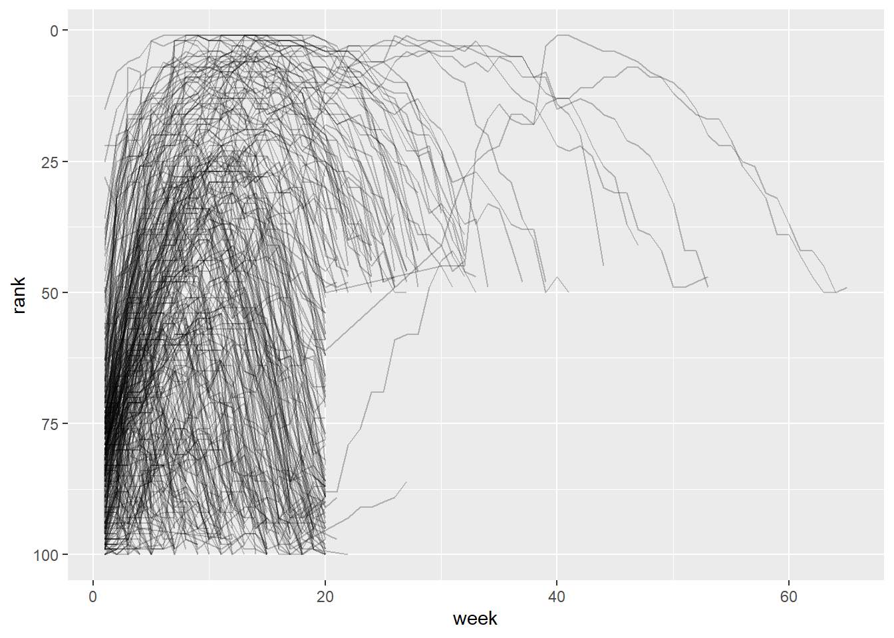

Chapter 4 Tidying data)
Hầu hết dữ liệu trong thông kê được là dữ liệu dạng bảng, được cấu tạo bởi hàng và cột.
4.1 Nguyên tắc chuẩn hóa dữ liệu (Tidying data)
## # A tibble: 6 × 4
## country year cases population
## <chr> <dbl> <dbl> <dbl>
## 1 Afghanistan 1999 745 19987071
## 2 Afghanistan 2000 2666 20595360
## 3 Brazil 1999 37737 172006362
## 4 Brazil 2000 80488 174504898
## 5 China 1999 212258 1272915272
## # ℹ 1 more row## # A tibble: 12 × 4
## country year type count
## <chr> <dbl> <chr> <dbl>
## 1 Afghanistan 1999 cases 745
## 2 Afghanistan 1999 population 19987071
## 3 Afghanistan 2000 cases 2666
## 4 Afghanistan 2000 population 20595360
## 5 Brazil 1999 cases 37737
## # ℹ 7 more rows## # A tibble: 6 × 3
## country year rate
## <chr> <dbl> <chr>
## 1 Afghanistan 1999 745/19987071
## 2 Afghanistan 2000 2666/20595360
## 3 Brazil 1999 37737/172006362
## 4 Brazil 2000 80488/174504898
## 5 China 1999 212258/1272915272
## # ℹ 1 more rowCác bảng dữ liệu trên có điểm gì khác nhau? Bảng nào phù hợp để phân tích?
Đây đều là những cách biểu diễn cùng một dữ liệu cơ bản, nhưng chúng không dễ sử dụng như nhau. Trong đó, sẽ dễ làm việc hơn nhiều trong vì nó đã ở dạng tidy.
Có 3 nguyên tắc để chuẩn hóa dữ liệu (dạng bảng):
4.2 Tại sao phải chuẩn hóa dữ liệu?
và tất cả các gói khác trong được thiết kế để hoạt động với dữ liệu gọn gàng. Dưới đây là một vài ví dụ nhỏ cho thấy cách bạn có thể làm việc với
## # A tibble: 6 × 5
## country year cases population rate
## <chr> <dbl> <dbl> <dbl> <dbl>
## 1 Afghanistan 1999 745 19987071 0.372741
## 2 Afghanistan 2000 2666 20595360 1.29447
## 3 Brazil 1999 37737 172006362 2.19393
## 4 Brazil 2000 80488 174504898 4.61236
## 5 China 1999 212258 1272915272 1.66750
## # ℹ 1 more row## # A tibble: 2 × 2
## year total_cases
## <dbl> <dbl>
## 1 1999 250740
## 2 2000 296920# Visualize changes over time
ggplot(table1, aes(x = year, y = cases)) +
geom_line(aes(group = country), color = "grey50") +
geom_point(aes(color = country, shape = country)) +
scale_x_continuous(breaks = c(1999, 2000)) # x-axis breaks at 1999 and 2000
Bài tập 1: Đối với mỗi bảng dữ liệu trên, hãy mô tả ý nghĩa của từng quan sát và từng cột.
Bài tập 2: Hãy phác thảo quy trình bạn sẽ sử dụng để tính toán tỉ lệ (rate) cho và . Bạn sẽ cần thực hiện bốn thao tác:
Trích xuất số ca bệnh lao (TB cases) của mỗi quốc gia theo từng năm.
Trích xuất dữ liệu dân số (population) tương ứng của mỗi quốc gia theo từng năm.
Chia số ca bệnh cho dân số, sau đó nhân với 10000.
Lưu lại kết quả vào vị trí thích hợp.
4.4 Cách thức chuẩn hóa
Nguyên tắc chuẩn hóa nghe có vẻ hiển nhiên, nhưng thực tế đa các dataset thực tết không chuẩn.
Lý do dữ liệu thường không chuẩn:
Cách tổ chức dữ liệu thường nhằm mục đích khác ngoài phân tích. → Ví dụ: thiết kế cho việc nhập liệu dễ dàng, chứ không phải cho phân tích.
Nhiều người không biết về nguyên tắc và cũng khó tự rút ra nếu không thường xuyên làm việc với dữ liệu.
Wide format (dạng rộng): biến được trải ra thành nhiều cột.
Long format (dạng dài): chỉ có một cột cho tên biến và một cột cho giá trị, còn mỗi hàng tương ứng với một quan sát duy nhất
Quy trình tidying:
Xác định đâu là biến (variables) và đâu là quan sát (observations).
Đôi khi dễ, nhưng cũng có khi cần hỏi người tạo dữ liệu.
Dùng các thao tác pivot để đưa dữ liệu về dạng tidy:
Lengthening (chuẩn hóa theo chiều dọc): chuyển dữ liệu từ dạng wide format sang long format
Widening (chuẩn hóa theo chiều ngang): chuyển dữ liệu từ dạng long format sang wide format
4.5 Chuẩn hóa theo chiều dọc
4.5.1 Dữ liệu trong tên cột
## # A tibble: 317 × 79
## artist track date.entered wk1 wk2 wk3 wk4 wk5 wk6 wk7 wk8 wk9
## <chr> <chr> <date> <dbl> <dbl> <dbl> <dbl> <dbl> <dbl> <dbl> <dbl> <dbl>
## 1 2 Pac Baby… 2000-02-26 87 82 72 77 87 94 99 NA NA
## 2 2Ge+her The … 2000-09-02 91 87 92 NA NA NA NA NA NA
## 3 3 Doors D… Kryp… 2000-04-08 81 70 68 67 66 57 54 53 51
## 4 3 Doors D… Loser 2000-10-21 76 76 72 69 67 65 55 59 62
## 5 504 Boyz Wobb… 2000-04-15 57 34 25 17 17 31 36 49 53
## # ℹ 312 more rows
## # ℹ 67 more variables: wk10 <dbl>, wk11 <dbl>, wk12 <dbl>, wk13 <dbl>, wk14 <dbl>,
## # wk15 <dbl>, wk16 <dbl>, wk17 <dbl>, wk18 <dbl>, wk19 <dbl>, wk20 <dbl>,
## # wk21 <dbl>, wk22 <dbl>, wk23 <dbl>, wk24 <dbl>, wk25 <dbl>, wk26 <dbl>,
## # wk27 <dbl>, wk28 <dbl>, wk29 <dbl>, wk30 <dbl>, wk31 <dbl>, wk32 <dbl>,
## # wk33 <dbl>, wk34 <dbl>, wk35 <dbl>, wk36 <dbl>, wk37 <dbl>, wk38 <dbl>,
## # wk39 <dbl>, wk40 <dbl>, wk41 <dbl>, wk42 <dbl>, wk43 <dbl>, wk44 <dbl>, …Trong dataset:
: tên nghệ sĩ, ban nhạc.
: tên bài hát.
: ngày bài hát bắt đầu lọt vào bảng xếp hạng Billboard.
: Thứ hạng của bài hát theo từng tuần.
Ở đây, các cột tên là biến tuần trong khi ô giá trị lại là thứ hạng. Để chuẩn hóa dữ liệu này ta sử dụng .
Các tham số trong \texttt{pivot_longer():
: Data frame cần pivot.
: (tidy-select) Các cột cần chuyển về dạng dài.
: Cách sắp xếp các dòng sau pivot.
: Tên cột (hoặc nhiều cột) mới sinh ra từ tên cột ban đầu.
Nếu độ dài = 0 hoặc : không tạo thêm cột.
Nếu độ dài = 1: tạo một cột chứa tên cột gốc.
Nếu độ dài > 1: phải dùng thêm hoặc để tách tên cột.
Đặc biệt:
= bỏ qua thành phần đó trong tên cột.
= phần đó của tên cột sẽ trở thành tên biến mới (ghi đè ).
: Regex để bỏ tiền tố trong tên cột.
: vị trí hoặc regex để tách tên cột.
: regex có nhóm để trích thành phần.
, : Khai báo trước kiểu dữ liệu mong muốn.
, : Hàm để chuyển đổi kiểu dữ liệu sau khi pivot.
: Xử lý tên cột trùng lặp
: Tên cột mới chứa giá trị từ các ô dữ liệu. (Bị bỏ qua nếu dùng ).
: Nếu , bỏ dòng có (chỉ giữ quan sát thực).
## # A tibble: 24,092 × 5
## artist track date.entered week rank
## <chr> <chr> <date> <chr> <dbl>
## 1 2 Pac Baby Don't Cry (Keep... 2000-02-26 wk1 87
## 2 2 Pac Baby Don't Cry (Keep... 2000-02-26 wk2 82
## 3 2 Pac Baby Don't Cry (Keep... 2000-02-26 wk3 72
## 4 2 Pac Baby Don't Cry (Keep... 2000-02-26 wk4 77
## 5 2 Pac Baby Don't Cry (Keep... 2000-02-26 wk5 87
## # ℹ 24,087 more rowsSau dữ liệu, có ba đối số chính:
chỉ định những cột cần được pivot, tức là những cột không phải biến. Đối số này dùng cú pháp giống , nên ở đây ta có thể dùng hoặc .
đặt tên cho biến được lưu trong tên cột, ở đây ta đặt tên biến đó là .
đặt tên cho biến được lưu trong các giá trị ô, ở đây ta đặt tên biến đó là .
Lưu ý rằng trong code, và được để trong dấu nháy kép vì đó là các biến mới ta tạo ra, chúng chưa tồn tại trong dữ liệu khi ta gọi .
Bây giờ ta hãy chú ý đến data frame sau khi được làm dài. Điều gì xảy ra nếu một bài hát nằm trong top 100 ít hơn 76 tuần? Ví dụ, bài của 2 Pac “Baby Don’t Cry”. Kết quả ở trên cho thấy nó chỉ nằm trong top 100 trong 7 tuần, và tất cả các tuần còn lại được điền bằng giá trị thiếu (). Những giá trị này thật ra không đại diện cho quan sát bị thiếu, mà là do cấu trúc của bắt buộc phải có. Vì vậy, ta có thể yêu cầu loại bỏ chúng bằng cách đặt .
billboard |>
pivot_longer(
cols = starts_with("wk"),
names_to = "week",
values_to = "rank",
values_drop_na = TRUE
)## # A tibble: 5,307 × 5
## artist track date.entered week rank
## <chr> <chr> <date> <chr> <dbl>
## 1 2 Pac Baby Don't Cry (Keep... 2000-02-26 wk1 87
## 2 2 Pac Baby Don't Cry (Keep... 2000-02-26 wk2 82
## 3 2 Pac Baby Don't Cry (Keep... 2000-02-26 wk3 72
## 4 2 Pac Baby Don't Cry (Keep... 2000-02-26 wk4 77
## 5 2 Pac Baby Don't Cry (Keep... 2000-02-26 wk5 87
## # ℹ 5,302 more rowsSố lượng hàng bây giờ ít hơn nhiều, cho thấy rằng nhiều hàng chứa đã bị loại bỏ.
Bạn cũng có thể thắc mắc: điều gì xảy ra nếu một bài hát nằm trong top 100 hơn 76 tuần? Với dữ liệu này ta không thể biết được, nhưng có thể đoán rằng các cột bổ sung như , , … sẽ được thêm vào dataset.
Dữ liệu hiện tại đã ở dạng tidy, nhưng ta có thể làm cho việc tính toán sau này dễ dàng hơn bằng cách chuyển đổi giá trị của từ chuỗi ký tự thành số, sử dụng và . Hàm rất tiện lợi vì nó sẽ trích xuất số đầu tiên trong một chuỗi, và bỏ qua toàn bộ phần ký tự khác
billboard_longer <- billboard |>
pivot_longer(
cols = starts_with("wk"),
names_to = "week",
values_to = "rank",
values_drop_na = TRUE
) |>
mutate(
week = parse_number(week)
)
billboard_longer## # A tibble: 5,307 × 5
## artist track date.entered week rank
## <chr> <chr> <date> <dbl> <dbl>
## 1 2 Pac Baby Don't Cry (Keep... 2000-02-26 1 87
## 2 2 Pac Baby Don't Cry (Keep... 2000-02-26 2 82
## 3 2 Pac Baby Don't Cry (Keep... 2000-02-26 3 72
## 4 2 Pac Baby Don't Cry (Keep... 2000-02-26 4 77
## 5 2 Pac Baby Don't Cry (Keep... 2000-02-26 5 87
## # ℹ 5,302 more rowsBây giờ khi đã có tất cả số tuần trong một biến và tất cả giá trị thứ hạng trong một biến khác, ta ở vị trí thuận lợi để trực quan hóa cách thứ hạng của bài hát thay đổi theo thời gian.
billboard_longer |>
ggplot(aes(x = week, y = rank, group = track)) +
geom_line(alpha = 0.25) +
scale_y_reverse()
Ta có thể thấy rằng rất ít bài hát duy trì trong top 100 quá 20 tuần. Với dữ liệu đã được chuẩn hóa ta có thể tạo được Thống kê theo nghệ sĩ (số bài hát, số tuần trụ BXH, rank trung bình)
billboard_longer %>%
group_by(artist) %>%
summarise(
n_songs = n_distinct(track),
total_weeks = n_distinct(paste(track, week)),
avg_rank = mean(rank, na.rm = TRUE)
) %>%
arrange(avg_rank)## # A tibble: 228 × 4
## artist n_songs total_weeks avg_rank
## <chr> <int> <int> <dbl>
## 1 "Santana" 1 26 10.5
## 2 "Elliott, Missy \"Misdemeanor\"" 1 21 14.3333
## 3 "matchbox twenty" 1 39 18.6410
## 4 "N'Sync" 3 74 18.6486
## 5 "Janet" 1 24 19.4167
## # ℹ 223 more rows4.5.2 Cách hoạt động
Chúng ta muốn bộ dữ liệu mới có ba biến: (đã tồn tại), (tên các cột) và (giá trị trong các ô). Để làm được điều này, chúng ta cần sử dụng trên :
## # A tibble: 6 × 3
## id measurement value
## <chr> <chr> <dbl>
## 1 A bp1 100
## 2 A bp2 120
## 3 B bp1 140
## 4 B bp2 115
## 5 C bp1 120
## # ℹ 1 more row


4.5.3 Nhiều biến được lưu trong một cột
## # A tibble: 7,240 × 58
## country year sp_m_014 sp_m_1524 sp_m_2534 sp_m_3544 sp_m_4554 sp_m_5564 sp_m_65
## <chr> <dbl> <dbl> <dbl> <dbl> <dbl> <dbl> <dbl> <dbl>
## 1 Afghanist… 1980 NA NA NA NA NA NA NA
## 2 Afghanist… 1981 NA NA NA NA NA NA NA
## 3 Afghanist… 1982 NA NA NA NA NA NA NA
## 4 Afghanist… 1983 NA NA NA NA NA NA NA
## 5 Afghanist… 1984 NA NA NA NA NA NA NA
## # ℹ 7,235 more rows
## # ℹ 49 more variables: sp_f_014 <dbl>, sp_f_1524 <dbl>, sp_f_2534 <dbl>,
## # sp_f_3544 <dbl>, sp_f_4554 <dbl>, sp_f_5564 <dbl>, sp_f_65 <dbl>,
## # sn_m_014 <dbl>, sn_m_1524 <dbl>, sn_m_2534 <dbl>, sn_m_3544 <dbl>,
## # sn_m_4554 <dbl>, sn_m_5564 <dbl>, sn_m_65 <dbl>, sn_f_014 <dbl>,
## # sn_f_1524 <dbl>, sn_f_2534 <dbl>, sn_f_3544 <dbl>, sn_f_4554 <dbl>,
## # sn_f_5564 <dbl>, sn_f_65 <dbl>, ep_m_014 <dbl>, ep_m_1524 <dbl>, …Dataset này, được thu thập bởi Tổ chức Y tế Thế giới (WHO), ghi lại thông tin về chẩn đoán bệnh lao (tuberculosis). Có hai cột vốn đã là biến và dễ diễn giải: và . Tiếp theo đó là 56 cột như , , và . Nếu bạn quan sát các tên cột này đủ lâu, bạn sẽ nhận ra một mẫu chung. Mỗi tên cột được tạo bởi ba phần, được phân tách bằng dấu gạch dưới _ :
Phần thứ nhất: //, mô tả phương pháp chẩn đoán được sử dụng.
Phần thứ hai: /, chỉ giới tính (mã hóa nhị phân trong dataset này).
Phần thứ ba: //////, biểu thị nhóm tuổi (ví dụ = 0–14 tuổi).
Như vậy, trong trường hợp này ta có sáu phần thông tin được ghi trong :
quốc gia
năm
phương pháp chẩn đoán
giới tính
nhóm tuổi
số lượng bệnh nhân trong nhóm.
Để sắp xếp 6 thông tin này vào 6 cột riêng biệt, ta sử dụng với:
một vector cột cho , hướng dẫn tách tên biến gốc thành nhiều phần qua ,và một tên cột cho .
who2 |>
pivot_longer(
cols = !(country:year),
names_to = c("diagnosis", "gender", "age"),
names_sep = "_",
values_to = "count"
)## # A tibble: 405,440 × 6
## country year diagnosis gender age count
## <chr> <dbl> <chr> <chr> <chr> <dbl>
## 1 Afghanistan 1980 sp m 014 NA
## 2 Afghanistan 1980 sp m 1524 NA
## 3 Afghanistan 1980 sp m 2534 NA
## 4 Afghanistan 1980 sp m 3544 NA
## 5 Afghanistan 1980 sp m 4554 NA
## # ℹ 405,435 more rowsMột các khác có thể được sử dụng là sử dụng tham số kết hợp việc sử dụng kĩ thuật phân tích chuỗi để trích xuất thông tin từ biến.
who2 |>
pivot_longer(
cols = !(country:year),
names_to = c("diagnosis", "gender", "age"),
names_pattern = "([a-z]+)_([mf])_(.*)",
values_to = "count"
)## # A tibble: 405,440 × 6
## country year diagnosis gender age count
## <chr> <dbl> <chr> <chr> <chr> <dbl>
## 1 Afghanistan 1980 sp m 014 NA
## 2 Afghanistan 1980 sp m 1524 NA
## 3 Afghanistan 1980 sp m 2534 NA
## 4 Afghanistan 1980 sp m 3544 NA
## 5 Afghanistan 1980 sp m 4554 NA
## # ℹ 405,435 more rows4.5.4 Dữ liệu và biến nằm trong tên cột
## # A tibble: 5 × 5
## family dob_child1 dob_child2 name_child1 name_child2
## <int> <date> <date> <chr> <chr>
## 1 1 1998-11-26 2000-01-29 Susan Jose
## 2 2 1996-06-22 NA Mark <NA>
## 3 3 2002-07-11 2004-04-05 Sam Seth
## 4 4 2004-10-10 2009-08-27 Craig Khai
## 5 5 2000-12-05 2005-02-28 Parker GracieBộ dữ liệu này chứa thông tin về năm gia đình, với tên và ngày sinh của tối đa hai đứa trẻ. Thách thức mới trong bộ dữ liệu này là tên cột lại chứa tên của hai biến (, ) và giá trị của một biến khác (, với giá trị 1 hoặc 2).
Để giải quyết vấn đề này, ta cần truyền một vector vào đối số , nhưng lần này ta dùng sentinel đặc biệt ; đây không phải là tên của một biến mà là một giá trị đặc biệt cho để thực hiện một hành động khác. Cụ thể, nó sẽ ghi đè đối số thông thường và sử dụng thành phần đầu tiên của tên cột sau khi pivot làm tên biến trong bảng kết quả.
household |>
pivot_longer(
cols = !family,
names_to = c(".value", "child"),
names_sep = "_",
values_drop_na = TRUE
)## # A tibble: 9 × 4
## family child dob name
## <int> <chr> <date> <chr>
## 1 1 child1 1998-11-26 Susan
## 2 1 child2 2000-01-29 Jose
## 3 2 child1 1996-06-22 Mark
## 4 3 child1 2002-07-11 Sam
## 5 3 child2 2004-04-05 Seth
## # ℹ 4 more rows4.6 Chuẩn hóa theo chiều ngang
Khi muốn mở rộng dữ liệu theo chiều ngang, giảm số dòng tăng số cột, đặc biệt trong trường hợp quan sát bị trải điều trên nhiều dong ta thực hiện chuẩn hóa theo chiều ngang bằng việc sử dụng hàm .
Các tham số trong :
: bảng dữ liệu cần pivot. : các cột định danh mỗi quan sát (nếu không chỉ định → mặc định lấy tất cả các cột trừ , ).
: có mở rộng toàn bộ kết hợp có thể của không (giống ) → tạo thêm nhiều hàng.
: cột (hoặc nhiều cột) dùng để tạo tên biến mới.
: cột (hoặc nhiều cột) chứa giá trị để đổ vào các ô.
: thêm tiền tố vào tên cột mới.
: ký tự ghép nếu có nhiều cột.
: thay cho và , cho phép tự thiết kế tên bằng cú pháp glue.
: sắp xếp tên cột theo thứ tự (mặc định FALSE).
: khi nhiều giá trị trong + nhiều , quy định thứ tự ghép cột (“fastest” hoặc “slowest”).
: mở rộng tất cả giá trị có thể trong , kể cả giá trị không xuất hiện.
: xử lý khi tên cột trùng (mặc định báo lỗi, có thể chọn “minimal”, “unique”…)
: điền giá trị thay thế cho (ví dụ: 0).
: hàm tổng hợp khi có nhiều giá trị rơi vào cùng một ô (ví dụ: , ).
: hàm tổng hợp cho các cột không dùng trong , , .
## # A tibble: 500 × 5
## org_pac_id org_nm measure_cd measure_title prf_rate
## <chr> <chr> <chr> <chr> <dbl>
## 1 0446157747 USC CARE MEDICAL GROUP INC CAHPS_GRP_1 CAHPS for MIPS SSM: Get… 63
## 2 0446157747 USC CARE MEDICAL GROUP INC CAHPS_GRP_2 CAHPS for MIPS SSM: How… 87
## 3 0446157747 USC CARE MEDICAL GROUP INC CAHPS_GRP_3 CAHPS for MIPS SSM: Pat… 86
## 4 0446157747 USC CARE MEDICAL GROUP INC CAHPS_GRP_5 CAHPS for MIPS SSM: Hea… 57
## 5 0446157747 USC CARE MEDICAL GROUP INC CAHPS_GRP_8 CAHPS for MIPS SSM: Cou… 85
## # ℹ 495 more rowsĐơn vị cốt lõi được nghiên cứu là tổ chức (), nhưng mỗi tổ chức lại trải rộng thành sáu hàng, với mỗi hàng tương ứng với một phép đo được thực hiện trong khảo sát tổ chức.
Ta có thể xem toàn bộ tập hợp giá trị của và bằng cách sử dụng hàm .
## # A tibble: 6 × 2
## measure_cd measure_title
## <chr> <chr>
## 1 CAHPS_GRP_1 CAHPS for MIPS SSM: Getting Timely Care, Appointments, and Information
## 2 CAHPS_GRP_2 CAHPS for MIPS SSM: How Well Providers Communicate
## 3 CAHPS_GRP_3 CAHPS for MIPS SSM: Patient's Rating of Provider
## 4 CAHPS_GRP_5 CAHPS for MIPS SSM: Health Promotion and Education
## 5 CAHPS_GRP_8 CAHPS for MIPS SSM: Courteous and Helpful Office Staff
## # ℹ 1 more rowCả hai cột này đều không phải là lựa chọn tốt để làm tên biến: thì không gợi ý rõ ý nghĩa của biến, còn lại là một câu dài có chứa khoảng trắng. Vì vậy, ta sẽ tạm dùng làm nguồn cho tên cột mới, nhưng trong một phân tích thực tế, bạn có thể muốn tự tạo ra những tên biến vừa ngắn gọn vừa có ý nghĩa hơn.
có giao diện ngược lại với : thay vì chọn tên cột mới, ta cần chỉ định các cột hiện có để xác định giá trị () và tên cột ().
## # A tibble: 500 × 9
## org_pac_id org_nm measure_title CAHPS_GRP_1 CAHPS_GRP_2 CAHPS_GRP_3 CAHPS_GRP_5
## <chr> <chr> <chr> <dbl> <dbl> <dbl> <dbl>
## 1 0446157747 USC CARE … CAHPS for MI… 63 NA NA NA
## 2 0446157747 USC CARE … CAHPS for MI… NA 87 NA NA
## 3 0446157747 USC CARE … CAHPS for MI… NA NA 86 NA
## 4 0446157747 USC CARE … CAHPS for MI… NA NA NA 57
## 5 0446157747 USC CARE … CAHPS for MI… NA NA NA NA
## # ℹ 495 more rows
## # ℹ 2 more variables: CAHPS_GRP_8 <dbl>, CAHPS_GRP_12 <dbl>Kết quả đầu ra vẫn chưa đúng: có vẻ mỗi vẫn xuất hiện nhiều hàng. Lý do là ta còn phải cho biết cột (hoặc các cột) nào có giá trị nhận diện duy nhất từng hàng; trong trường hợp này chính là các biến bắt đầu bằng .
cms_patient_experience |>
pivot_wider(
id_cols = starts_with("org"),
names_from = measure_cd,
values_from = prf_rate
)## # A tibble: 95 × 8
## org_pac_id org_nm CAHPS_GRP_1 CAHPS_GRP_2 CAHPS_GRP_3 CAHPS_GRP_5 CAHPS_GRP_8
## <chr> <chr> <dbl> <dbl> <dbl> <dbl> <dbl>
## 1 0446157747 USC CARE ME… 63 87 86 57 85
## 2 0446162697 ASSOCIATION… 59 85 83 63 88
## 3 0547164295 BEAVER MEDI… 49 NA 75 44 73
## 4 0749333730 CAPE PHYSIC… 67 84 85 65 82
## 5 0840104360 ALLIANCE PH… 66 87 87 64 87
## # ℹ 90 more rows
## # ℹ 1 more variable: CAHPS_GRP_12 <dbl>Bài tập 3: Bộ dữ liệu này đến từ khảo sát của Pew Research Center về mối quan hệ giữa tôn giáo và mức thu nhập hộ
Biến nào trong dataset hiện đang bị “ẩn” trong tên cột? Vì sao cách lưu dữ liệu này chưa phải là tidy data?
Viết code R sử dụng ‘pivot_longer()’ để đưa dữ liệu về dạng tidy, với các cột: ‘religion’, ‘income_group’, ‘percent’, ‘sample_size’
religion <- read.csv('https://raw.githubusercontent.com/chrosemo/data607_fall19_project2/master/pew.csv', header=TRUE)
glimpse(religion)## Rows: 12
## Columns: 6
## $ Religious.tradition <chr> "Buddhist", "Catholic", "Evangelical Protestant", "Hind…
## $ Less.than..30.000 <chr> "36%", "36%", "35%", "17%", "53%", "48%", "16%", "29%",…
## $ X.30.000..49.999 <chr> "18%", "19%", "22%", "13%", "22%", "25%", "15%", "20%",…
## $ X.50.000..99.999 <chr> "32%", "26%", "28%", "34%", "17%", "22%", "24%", "28%",…
## $ X.100.000.or.more <chr> "13%", "19%", "14%", "36%", "8%", "4%", "44%", "23%", "…
## $ Sample.Size <chr> "233", "6,137", "7,462", "172", "1,704", "208", "708", …4.6.1 Cách hoạt động
Để hiểu cách hoạt động, hãy bắt đầu với một bộ dữ liệu rất đơn giản. Lần này chúng ta có hai bệnh nhân với là và , có ba phép đo huyết áp trên bệnh nhân và hai phép đo trên bệnh nhân :
df <- tribble(
~id, ~measurement, ~value,
"A", "bp1", 100,
"B", "bp1", 140,
"B", "bp2", 115,
"A", "bp2", 120,
"A", "bp3", 105
)Chúng ta sẽ lấy các giá trị từ cột và tên từ cột :
## # A tibble: 2 × 4
## id bp1 bp2 bp3
## <chr> <dbl> <dbl> <dbl>
## 1 A 100 120 105
## 2 B 140 115 NAĐể bắt đầu quá trình, cần xác định trước những gì sẽ đi vào các hàng và cột. Tên các cột mới sẽ là các giá trị duy nhất của .
## [1] "bp1" "bp2" "bp3"Theo mặc định, các hàng trong kết quả được xác định bởi tất cả các biến mà không được sử dụng làm tên cột mới hoặc giá trị. Những biến này được gọi là . Ở đây chỉ có một cột, nhưng nói chung có thể có bao nhiêu cột cũng được.
## # A tibble: 2 × 1
## id
## <chr>
## 1 A
## 2 Bsau đó kết hợp các kết quả này để tạo ra một trống:
## # A tibble: 2 × 4
## id x y z
## <chr> <lgl> <lgl> <lgl>
## 1 A NA NA NA
## 2 B NA NA NASau đó, điền tất cả các giá trị còn thiếu dựa trên dữ liệu trong input. Trong trường hợp này, không phải mọi ô trong kết quả đều có giá trị tương ứng trong input, vì bệnh nhân không có phép đo huyết áp thứ ba, nên ô đó vẫn để trống. ta cũng có thể thắc mắc điều gì sẽ xảy ra nếu có nhiều hàng trong input tương ứng với một ô trong output. Ví dụ dưới đây có hai hàng tương ứng với và :
df <- tribble(
~id, ~measurement, ~value,
"A", "bp1", 100,
"A", "bp1", 102,
"A", "bp2", 120,
"B", "bp1", 140,
"B", "bp2", 115
)Nếu chúng ta cố gắng thực hiện với dữ liệu này, kết quả sẽ chứa các cột kiểu danh sách ().
## Warning: Values from `value` are not uniquely identified; output will contain list-cols.
## • Use `values_fn = list` to suppress this warning.
## • Use `values_fn = {summary_fun}` to summarise duplicates.
## • Use the following dplyr code to identify duplicates.
## {data} |>
## dplyr::summarise(n = dplyr::n(), .by = c(id, measurement)) |>
## dplyr::filter(n > 1L)## # A tibble: 2 × 3
## id bp1 bp2
## <chr> <list> <list>
## 1 A <dbl [2]> <dbl [1]>
## 2 B <dbl [1]> <dbl [1]>Vì chưa biết cách làm việc với loại dữ liệu này, ta làm theo gợi ý trong cảnh báo () để xác định vấn đề nằm ở đâu:
## # A tibble: 1 × 3
## id measurement n
## <chr> <chr> <int>
## 1 A bp1 2Sau đó, nhiệm vụ là xác định xem dữ liệu của mình đã bị lỗi ở đâu và hoặc là sửa các vấn đề gốc, hoặc là sử dụng kỹ năng nhóm () và tóm tắt () để đảm bảo rằng mỗi tổ hợp giá trị hàng và cột chỉ có một hàng duy nhất.